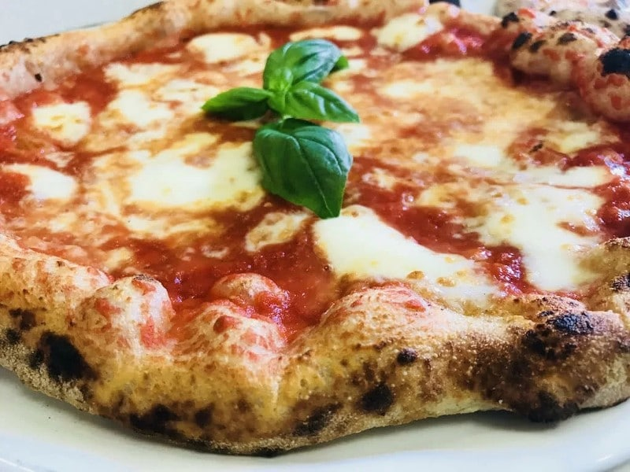

The authentic Neapolitan pizza recipe

Description
Neapolitan pizza (Italian: Pizza Napoletana), also known as Naples-style pizza, is a style of pizza made with tomatoes and mozzarella cheese.
The tomatoes must be either San Marzano tomatoes or Pomodorino del Piennolo del Vesuvio. The cheese must be Mozzarella di Bufala Campana or Fior di Latte.
Ingredients
- For the dough
With 00 flour (recommended):
- Flour – 640g
- Water (room temperature) – 360g
- Salt (fine) – 14g
- Yeast (dried or fresh) – around 0.2g to 0.5g (depending on yeast type & room temperature)
With Strong white bread flour (decent substitute for 00 flour):
- Flour – 620g
- Water (room temperature) – 380g
- Salt (fine) – 14g
- Yeast (dried or fresh) – around 0.2g to 0.5g (depending on yeast type & room temperature)
- For the toppings
- 300g tin of plum tomatoes
- Tomato puree (optional) – a tablespoon
- Salt – sprinkling of table salt or sea salt
- Pepper – freshly ground black pepper
- Mozzarella – 2 x 125g bags of fresh Mozzarella balls
- Parmesan – about 30g
- Olive Oil – a few glugs
- Basil – hand full of fresh leaves
Steps
- For the dough
Tips:
- This recipe is for a 24 hour prove. I know it sounds like a long time but don’t worry!
- Simply make the dough the night before you want to make pizza and you will be good to go on the following evening
- Don’t worry about exact timings, anywhere around 20-28 hours will be fine.
- Mix all the ingredients into a shaggy mass in a large bowl, starting by adding the water first. You can do this by hand or use a wooden spoon.
- Cover the bowl with cling film, a plastic carrier bag, or a damp cloth (if the cloth isn’t damp the dough may dry out).
- Leave the dough to rest for around 1 hour(the technical term for this process is the Autolyse).
- Turn the dough out onto the counter and knead for around 5 minutes.
- Place the dough back into the bowl and cover.
- Leave the dough to prove(in one big lump, don’t worry about the shape) for around 20 hours.
- Divide the dough into 4 equal parts(250g each) using some kitchen scales and a knife (or dough scraper). Do this about 4 hours before you intend to cook the pizza (after about a 20 hour prove).
- Place each dough ball into a small bowl and cover. Alternatively, use a large tupperware container with a lid, or two smaller ones.
- Leave the dough balls to prove again for about 4-6 hours.
- For the tomato sauce
Tips:
- Do not skimp on the tomatoes, quality tinned tomatoes are key to this simple sauce.
- Instead of cooking the sauce, you can thicken it by sieving (after blending) if you prefer.
- Blend a tin of quality plum tomatoesinto a smooth sauce.
- Cook the sauce until it reaches the desired thickness(still runny but quite thick)
- Add a tablespoon or 2 of tomato puree for a richer, sweeter sauce (optional).
- Season with salt and pepperto taste.
- For the shaping/cooking
Tips:
- Shape and cook the pizzas one at a time. If the pizzas are shaped and left to sit before cooking, they may stick to the surface and then rip when moved. Speed is important!
- When loading the pizza onto the peel/chopping board, be sure to use a little sprinkle of flour. And again be quick! Once the pizza is on the peel, load it straight into the oven. These tips should prevent the pizza from sticking.
- Removing moisture from fresh mozzarella stops the pizza from becoming soggy. This can be done by breaking it up and wrapping it in kitchen roll 30 minutes before.
- You can also buy low moisture mozzarella which requires no preperation. This is the easiest option for ensuring you don’t end up with soggy pizza!
- Ensure that you baking stone/tray is inside your oven.
- Get your oven up to temperature. For pizza ovens 420 – 480 degrees Celsius (790 – 900 Fahrenheit). For a regular domestic oven, as hot as it will get (around 260 Celsius or 500 Fahrenheit). An infrared thermometer is useful here for measuring the temperature of the cooking surface.
- Dust a dough ball with plenty of flour and remove from the container. Place the dough into a large bowl with a generous covering of flour in the base of it
- In the bowl, press down from the centre of the dough towards the edges. The idea here is to move the air from the middle of the dough to the outside, where it will form a crust. Be careful not to press the edge of the dough down (the crust), any air removed cannot be regained and you will not end up with a well-risen crust.
- Keep turning the dough as you work the air towards the edges. You should start forming a small pizza shape at this stage.
- Turn the dough over and repeat this process in the bowl, on the other side.
- Remove from the bowl and place on the counter, ensuring the base of the dough is coated with plenty of flour.
- Stretch the dough – remembering not to touch the edge of the dough (the crust), hold the dough down with your right hand, and with the other gently stretch the dough outwards.
- Repeat the stretch – keep turning the dough and repeating this until you have a base which is about 9 to 10 inches in diameter. You can usually go thinner than you think so don’t worry too much about the dough ripping.
- Top the base with around 2 soup spoons (dessert spoons) of tomato sauce and spread gently across the pizza and up to the edges (just before the crusts). Be careful not to press down as you spread or you may make the dough stick to the counter.
- Spread about a handful of Mozzarella (half of a 125g packet) evenly across the pizza, and you are ready to cook! (We will add the parmesan, basil, and olive oil after cooking.)
- Slide the pizza onto a peel (that has a dusting of flour on it), or chopping board if you don’t have a peel.
- Load straight onto baking stone/tray inside oven.
- For a pizza oven, cook for around 60 – 90 seconds and turn every 20 – 30 seconds as required. For a regular domestic oven, cook for around 6 – 8 minutes, turning about every 2 – 3 minutes as required.
- Remove the pizza from the oven (preferably with a peel) and place on a chopping board or a plate.
- Grate parmesan on top and add some torn basil. Finish with a drizzle of olive oil and a sprinkling of black pepper if you like.
- Let the pizza cool a little and tuck in!
Back to the home page